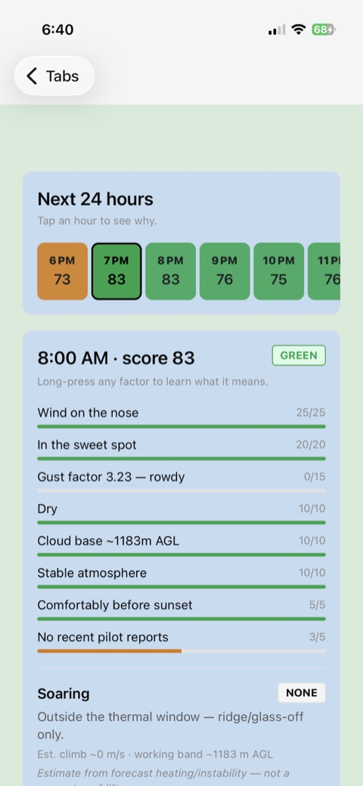
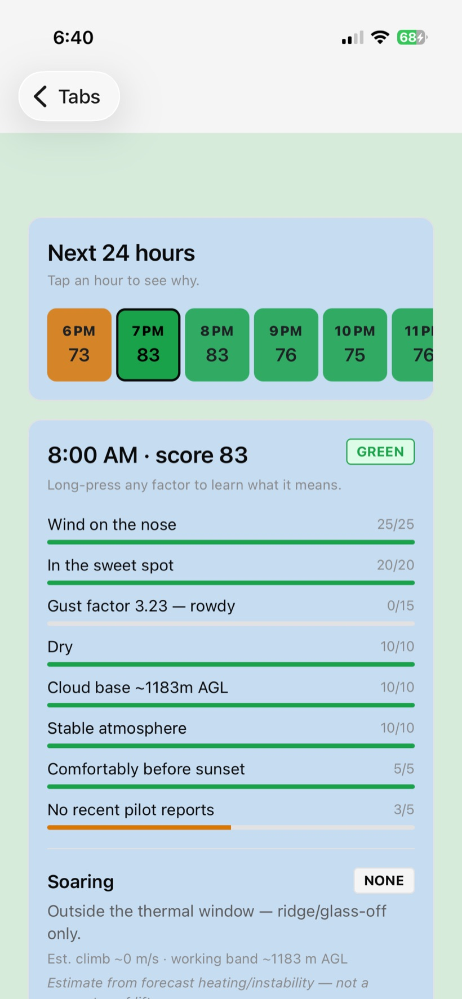
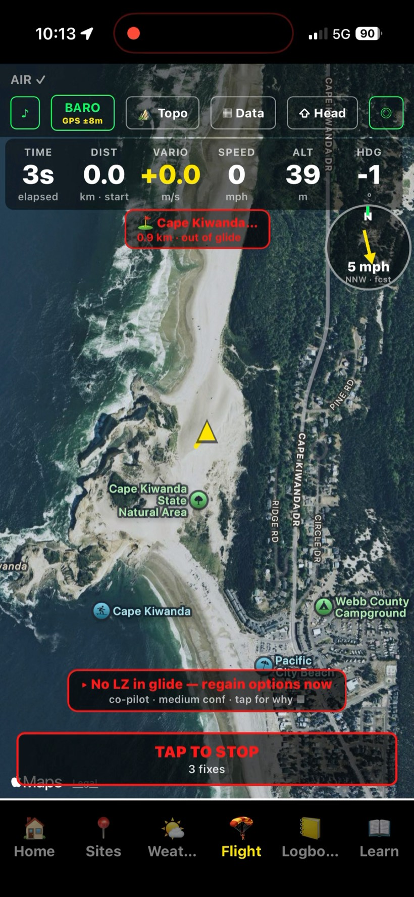
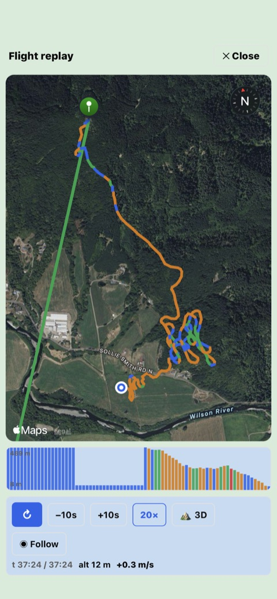
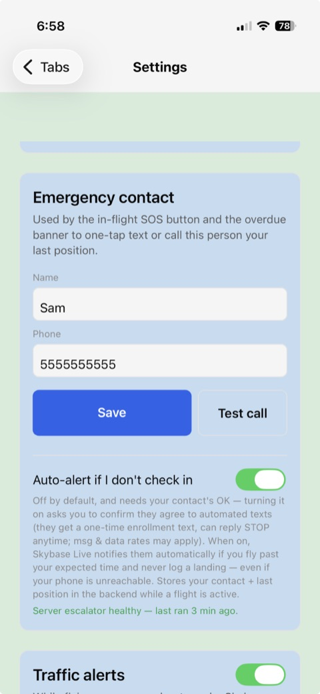

Paragliding companion · offline-first
Skybase answers the three questions every free-flight pilot has — then flies with you and keeps the record.
Built and flown by a working pilot. No accounts. Your data stays on your phone.

What Skybase is
Most pilots juggle a weather site, a separate vario app, a map, and a spreadsheet. Skybase brings the whole loop into one place: pre-flight weather & site intelligence, an in-flight instrument (audio vario, moving map, glide, XC), and an IGC logbook with replay — all working offline at the hill, tuned to your skill level, from student to advanced.
It's decision support, never a clearance. Every score, window, thermal and wind read is an aid — the reasoning is always shown so you can disagree with it. You make the go/no-go call and carry current charts.
Before you drive to launch
Open a site and see the next 24 hours at a glance — a plain-language read of the conditions, not just a number.
0–100 with green / yellow / red and a full factor breakdown: wind direction & speed, gust factor, precip, cloud base, overdevelopment, time to sunset. The reasoning is always visible.
The longest workable daytime run — and it's daylight-gated, so a launch never suggests a 2 AM window.
Will there be lift or a sled ride? Estimated climb strength, the working band, and when thermals switch on and off. Labelled an estimate, because it is one.
Real anemometer readings from free community & government networks (Pioupiou + NOAA/NWS), closest-first, with reading age — ground truth to sanity-check the forecast.
Estimates the hike up to launch (distance + ascent → time) and tells you when to leave to make the flyable window before sunset.
Loads real airspace zones and warns near them — advisory only, never a substitute for your pre-flight chart & NOTAM check.
Skill-aware: students get tighter wind/gust caps and more "explain this metric" help; advanced pilots get more headroom. Weather is free, global Open-Meteo data (no key), cached so it works offline at the hill.


In the air
Stow the phone and fly. The screen flips to a high-contrast flight theme with huge digits, big touch targets, and audio you don't need to look at.
Climb beeps with cadence and pitch, plus a tunable sink alarm — GPS + barometer fused through a Kalman filter that self-calibrates, GPS-only fallback when there's no baro.
The map rotates so your direction is always up; the wind rose stays north-up so wind still reads true. Recenter with one tap; pan to look around and it holds.
A final-glide reach cone and glide-to-nearest-landing readout — a free safety aid, always on.
Set a GOTO target or import a task (XCTrack .xctsk / SeeYou .cup); see distance, bearing, ETA and turnpoint cylinders in the air.
Long-press any readout to move, resize or hide it — three layout pages, with optional glove-friendly auto-switch between a thermal page and a glide page.
Keeps logging in the background so battery lasts. A one-time in-app disclosure explains exactly why it needs background location before it's ever asked for.
After you land
Every flight is saved as an IGC track — the sport's universal format — and comes to life in a full replay.
Scrub a colour-coded altitude barogram, play the track back at speed, follow a tilted camera down your line, and tip into a 3D terrain view.
Career totals — flights, air time, max altitude & climb, sites, distance, best XC — plus achievements as you hit milestones.
An AI thermal forecast trained on your own flights — it predicts a day's climbs from your most similar past days, and grades its own track record honestly (no hindsight in the maths).
One-tap export of every flight, site, wing and route as open JSON; share any flight's IGC to SeeYou / XCSoar or your XC league.


Safety — free, and never paywalled
The tools that keep you alive stay free forever. Sharing is always opt-in and off by default.
A site-aware checklist that resets overnight — so "did I do up my leg straps?" has an answer.
Track your wing, harness and reserve; get a local reminder before your reserve repack is due.
One tap texts your emergency contact your position. An optional overdue watch can auto-alert them if you don't check in after a flight — opt-in, with the contact's consent.
Share your live position with a private group and get converging-traffic alerts — but only from other Skybase pilots who are also sharing, not all air traffic. We say so, in the app.
Honest by design
Get Skybase
Skybase is in its first public release run. It's on TestFlight for iPhone and in closed testing on Google Play for Android right now, with the App Store and Play store listings in review.
In App Store review · TestFlight beta open
Join the beta through Apple's TestFlight — install the free TestFlight app, then open the invite link.
Closed testing on Google Play
Android testers get in via a Google Play opt-in link (your Play-Store email is added to the tester list first).
Want in? Email kajoadv@gmail.com with your platform (and, for Android, the Gmail your Play Store uses). We'll send the right link.
Good to know
It's a capable phone vario (GPS + barometer). For serious XC, treat it as a smart companion and carry a dedicated backup — the manual explains why.
Yes — the instrument, logbook, and cached weather all work offline. Live weather refresh and the opt-in cloud features need a connection.
No. There are no accounts and no login — everything works on-device the moment you install.
An independent developer and paraglider pilot — the app's first daily user — building it under the GetLostAdv brand (this site's domain).